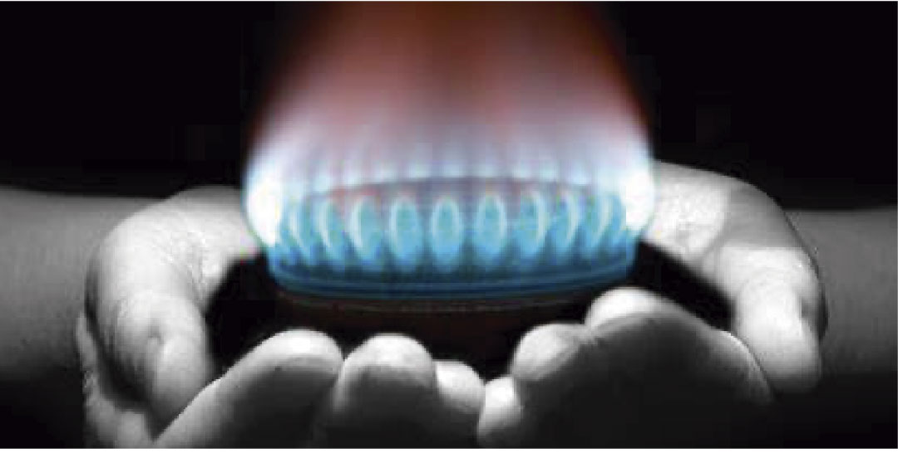

En la ciudad de Antofagasta existen 255 calderas inscritas, de las cuales 188 son para usos industriales, 12 comerciales, 4 Residenciales, 47 Servicios y 4 no clasificables (según el D.S Nº48/1984 del MINSAL).
El tamaño de la oportunidad se ha estimado considerando las 188 calderas industriales y las 12 calderas con fines comerciales, asumiendo que ellas operan las 24 horas del día los 365 días del año. Dado que no se cuenta con información de detalle, se asume una potencia para una caldera que sirva con fines industriales y comerciales. Para lo anterior se consideró una caldera de 19,2 MW de la marca Bosch.